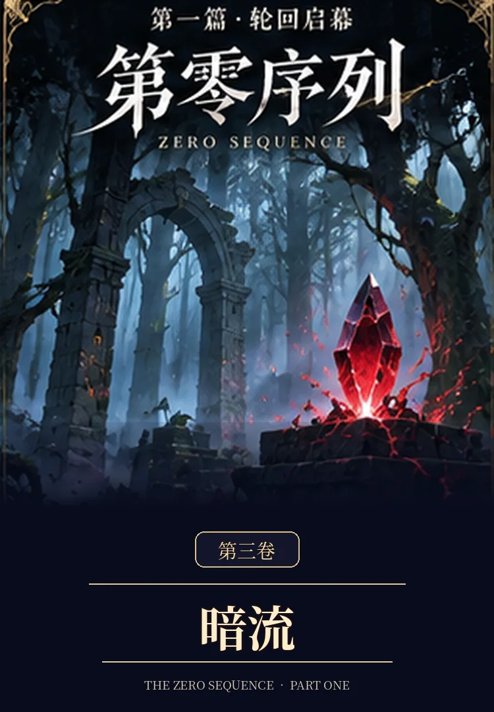

VOLUME 03 · COMPLETE
第三卷《暗流》

离开晨星镇后，世界第一次真正扩大。维兰德城的玩家势力、交易体系、灰鸦情报网与白烛医疗院相继进入视野；古言澈加入长渊工作室，“银月”出现无法解释的自主反应，而那些本不该这么早发生的异常，也开始从水面下浮现。
VOLUME 03 · COMPLETE

离开晨星镇后，世界第一次真正扩大。维兰德城的玩家势力、交易体系、灰鸦情报网与白烛医疗院相继进入视野；古言澈加入长渊工作室，“银月”出现无法解释的自主反应，而那些本不该这么早发生的异常，也开始从水面下浮现。